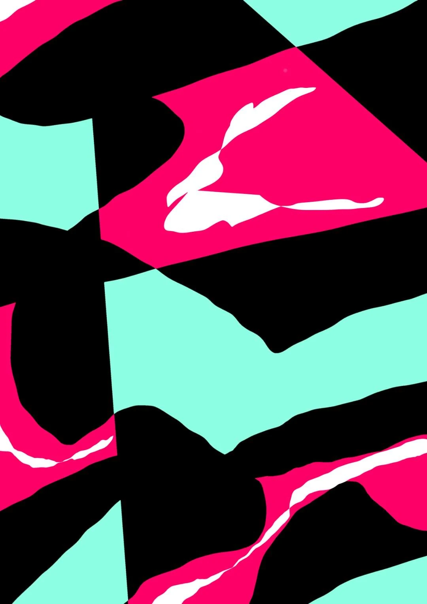
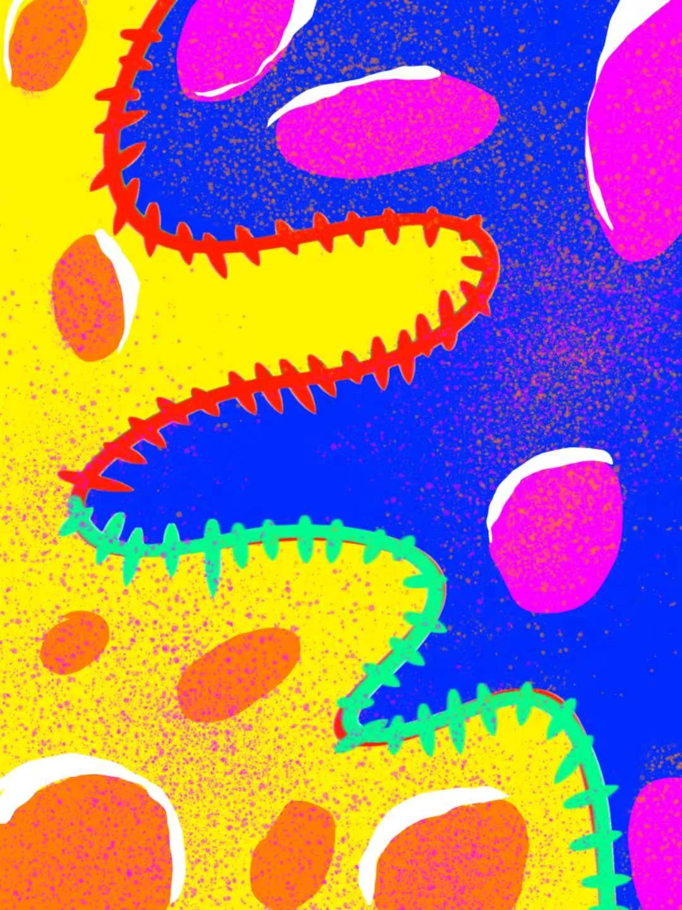
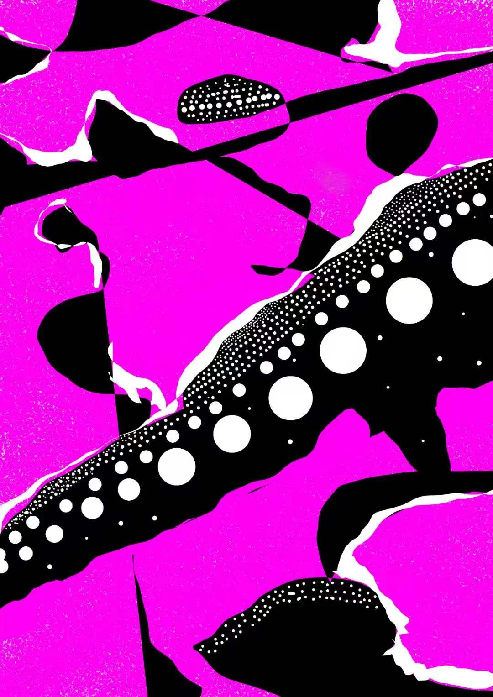
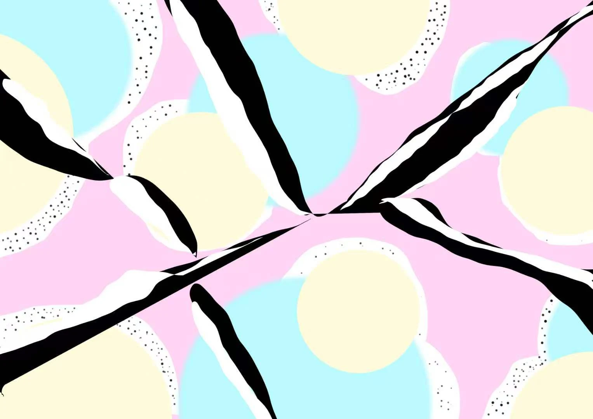
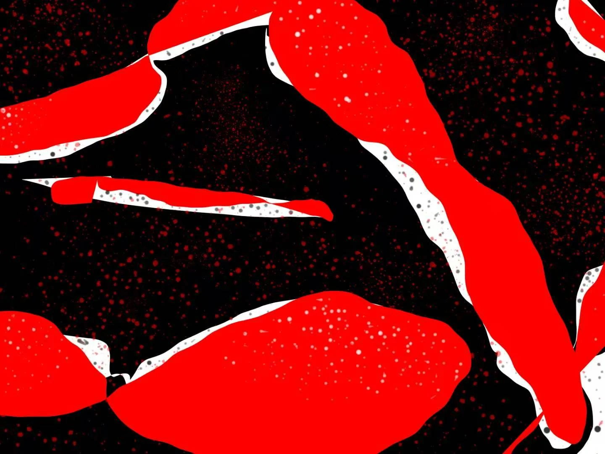

INDEPENDENT MIND. INTERACTIVE DESIGN.BASED IN SYDNEY
LIBRAWU.
吴悦悦 / YUEYUE WU
INTERACTION & VISUAL DESIGNER
INTERACTION & VISUAL DESIGNER

✦拖动，换一个视角
THOUGHTFULLY MADE. PLAYFULLY TOLD.SELECTED PROJECTS / 2026
Selected
work.
从一个问题出发，走向一种新的体验。
A SPACE FOR HAPPY ACCIDENTSLess rules.
Less rules.
More play.
色彩不必安静，灵感不必规矩。
拖动这些视觉参考，让画面重新发生。
ACID / ELECTRIC
TEXTURE / RHYTHMFORM / FLOW

SOFT / CONTRAST
BOLD / ENERGY色彩研究 · 视觉参考拖动排列 · 点击放大
THE PERSON BEHIND THE PIXELSCurious
Curious
by design.
你好，我是吴悦悦。
一名喜欢把好奇心，变成可感知体验的设计学生。
目前在悉尼大学学习交互设计。我关注界面中的情绪、人与设备之间的关系，也喜欢探索角色、场景与三维世界。对我来说，设计既要有鲜明的表达，也要让人愿意靠近、容易理解。
正在探索
Interaction Design · Game UI
Visual Storytelling · Digital Media
常用工具
GitHub / LibraWu1001Figma · Adobe Photoshop · Illustrator
Blender · Fusion 360 · Creative Coding
GOOD THINGS START WITH A CONVERSATION设计机会 · 合作交流
LET’S MAKE
SOMETHING
matter.
wyylibra@163.com
有想法，或只是想打个招呼？